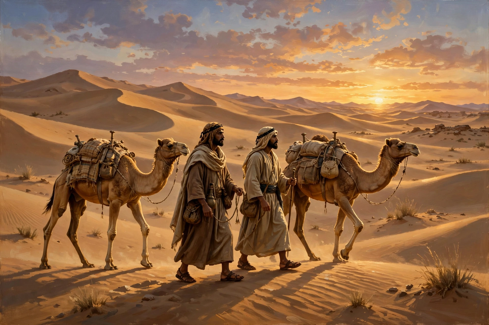

From Wikipedia, the free encyclopedia

| Hijrah | |
|---|---|
| Date | 622 CE (1 AH) |
| Route | Mecca to Yathrib (Medina), c. 320 km |
| Principal figure | Muhammad |
| Companion | Abu Bakr |
| Significance | Epoch of the Islamic calendar; founding of the first Muslim community |
The Hijrah (Arabic: الهجرة, "migration" or "emigration"), also spelled Hegira, was the journey undertaken by the Islamic prophet Muhammad and his followers from Mecca to the city of Yathrib — renamed Medina ("the City") — in 622 CE. Facing escalating persecution in Mecca, Muhammad accepted an invitation from converts in Yathrib to act as arbitrator and leader of their community. The Hijrah marks the beginning of the Islamic (Hijri) calendar, whose years are counted from this event and denoted AH (Anno Hegirae), and it transformed Muhammad's followers from a persecuted minority into the nucleus of a political community, the ummah.
By 620 CE Muhammad's preaching had won a small following in Mecca but growing hostility from the Quraysh, the city's dominant tribe, whose leaders saw the new monotheism as a threat to the pilgrimage economy centred on the Kaaba. Delegations from Yathrib — an oasis town weakened by feuding between the Arab tribes Aws and Khazraj and home to several Jewish tribes — met Muhammad at Aqaba during the pilgrimage seasons of 620 and 621. In the pledges of Aqaba, the Yathrib converts promised to worship one God, obey Muhammad, and protect him as they would their own families. Over the following months, most of Mecca's Muslims quietly emigrated to Yathrib; these emigrants became known as the Muhajirun, and their Medinan hosts as the Ansar ("the Helpers").
According to the traditional accounts, Muhammad remained in Mecca until the last moment. When Quraysh leaders plotted to assassinate him, he slipped away at night with his closest companion, Abu Bakr, leaving his cousin Ali sleeping in his bed as a decoy. The two men hid for three days in the cave of Thawr south of Mecca while searchers scoured the area — an episode alluded to in the Quran (9:40) — then travelled by an unusual coastal route with a guide, reaching Quba on the outskirts of Yathrib before entering the city itself. Traditional dating places Muhammad's arrival in Quba on 8 Rabi' al-Awwal (23 September 622 in the Julian calendar) and his entry into Medina a few days later; the first day of the Hijri year, 1 Muharram, corresponds to 16 July 622.
In Medina, Muhammad established the institutions of the new community: the Prophet's Mosque was built, the call to prayer (adhan) was instituted with Bilal ibn Rabah as the first muezzin, emigrants were paired in brotherhood with Medinan helpers, and the Charter of Medina (Constitution of Medina) bound the city's tribes — Muslim and Jewish — into a single confederation with mutual obligations. From this base, the community grew into the polity that, within a decade, unified most of Arabia.
The second caliph, Umar ibn al-Khattab, formally adopted the Hijrah as the epoch of the Muslim calendar around 638 CE, on the advice of his council, rather than Muhammad's birth or the first revelation. The word hijrah itself acquired broader meanings in Islamic thought: an inner, spiritual migration from sin, and in modern usage various ideological movements have claimed the term. The migration from Mecca remains the paradigmatic event of Islamic history — the birthday, in effect, of the Muslim community as a society rather than merely a congregation.